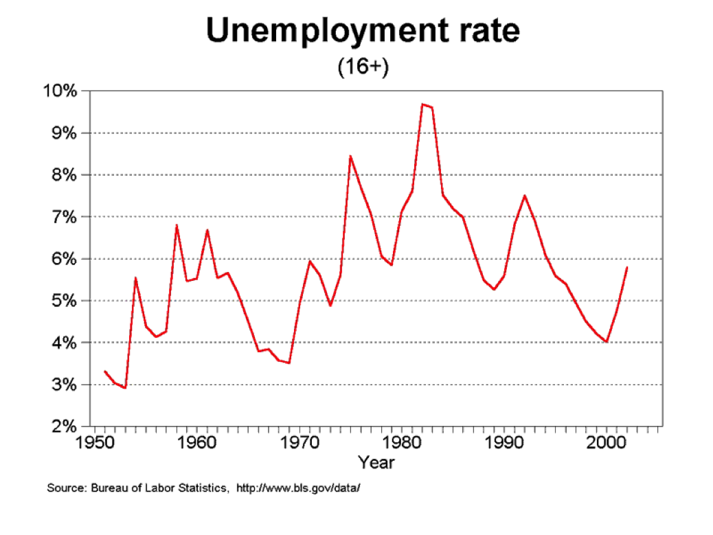
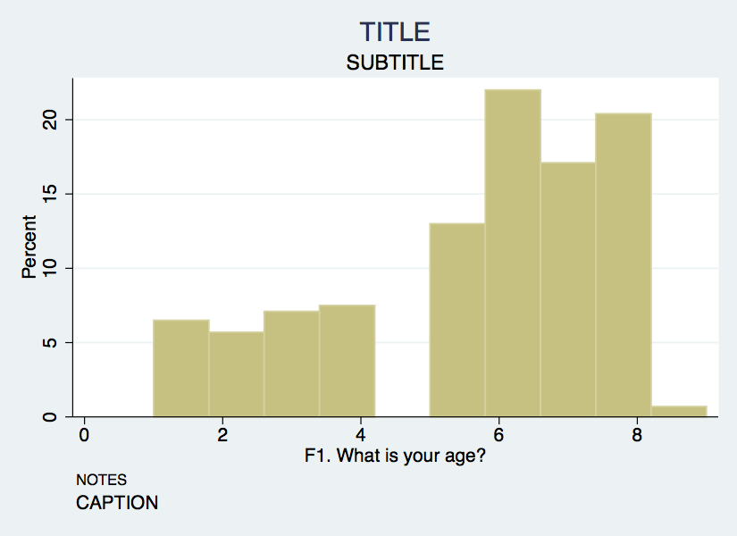
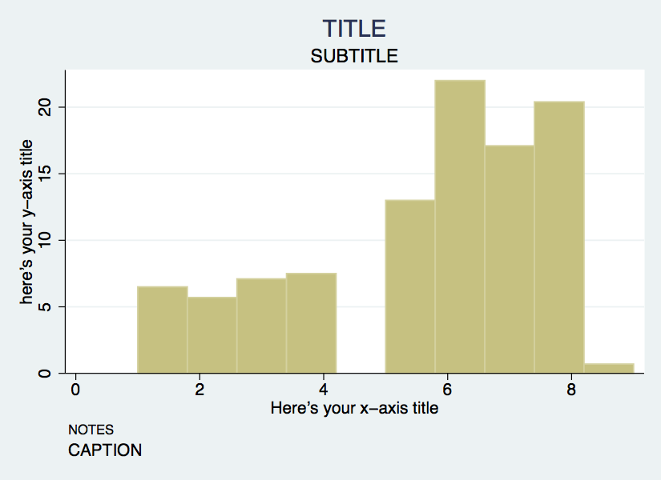
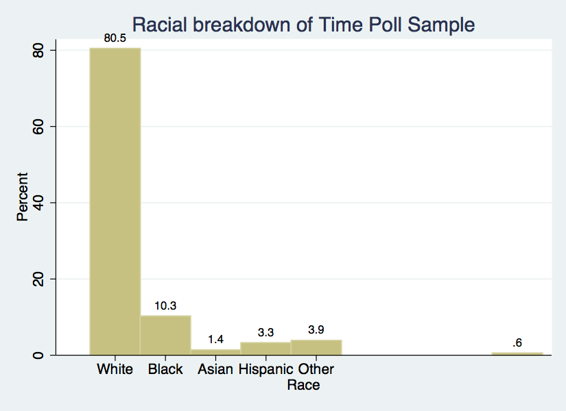
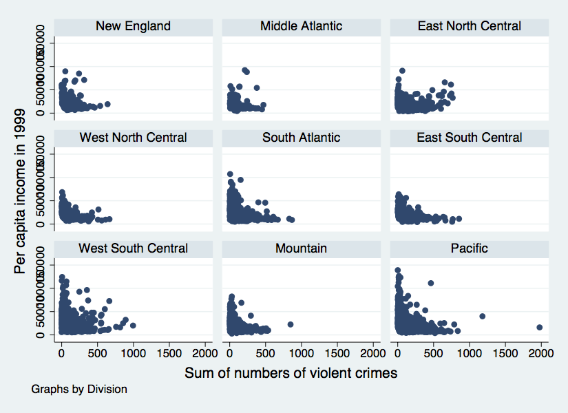
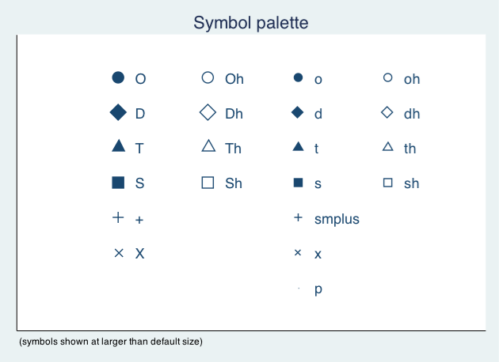
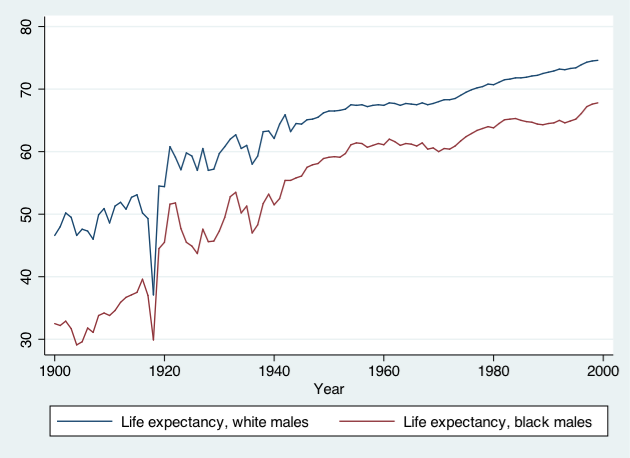
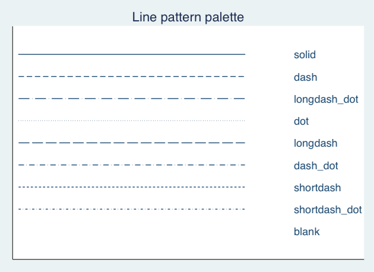

Stata Graphics
Table of Contents
- 1. Introduction
- 2. Univariate Graphics
- 3. Bivariate Graphics
- 3.1. The Twoway Family
- 3.2. Twoway and the "by" Statement
- 3.3. Twoway Title Options
- 3.4. Twoway Title Options Example
- 3.5. Twoway Symbol Options
- 3.6. Twoway Symbol Options
- 3.7. Overlaying Twoway Graphs
- 3.8. Overlaying Points and Lines
- 3.9. Overlaying Points and Labels
- 3.10. Exercise 2: The TwoWay Family
- 4. More Fun with Twoway Line Graphs
- 5. Wrap-up
1 Introduction
1.1 Download workshop materials setup
- Lab computer log in:
- USERNAME: dataclass
- PASSWORD: on the board to your left
- Download materials from http://tutorials.iq.harvard.edu/Stata/StataGraphics.zip
- Extract materials from the
StataGraphics.zipfile - Launch Stata and open the
StataGraphics.dofile
1.2 Organization
- Please feel free to ask questions at any point if they are relevant to the current topic (or if you are lost!)
- There will be a Q&A after class for more specific, personalized questions
- Collaboration with your neighbors is encouraged
- If you are using a laptop, you will need to adjust paths accordingly
- Make comments in your Do-file rather than on hand-outs
- Save on flash drive or email to yourself
1.2.1 Graphing Strategies
- Keep it simple
- Labels, labels, labels!!
- Avoid cluttered graphs
- Every part of the graph should be meaningful
- Avoid:
- Shading
- Distracting colors
- Decoration
- Always know what you’re working with before you get started
- Recognize scale of data
- If you’re using multiple variables – how do their scales align?
- Before any graphing procedure review variables with
codebook,sum,tab, etc. - HELPFUL STATA HINT: If you want your command to go on multiple lines use
///at end of each line
1.2.2 Terrible Graph

1.2.3 Much Better Graph

2 Univariate Graphics
2.1 Our First Dataset
- Time Magazine Public School Poll
- Based on survey of 1,000 adults in U.S.
- Conducted in August 2010
- Questions regarding feelings about parental involvement, teachers union, current potential for reform
- Open Stata and call up the datafile for today
// Step 1: tell Stata where to find data: cd "~/StataGraphics/dataSets" // Step 2: call up our dataset: use TimePollPubSchools.dta
cd "~/StataGraphics/dataSets" /nfs/home/I/izahn/StataGraphics/dataSets use TimePollPubSchools.dta
2.2 Single Continuous Variables
Example: Histograms
- Stata assumes you’re working with continuous data
- Very simple syntax:
hist varname
- Put a comma after your varname and start adding options
bin(#): change the number of bars that the graph displaysnormal: overlay normal curveaddlabels: add actual values to bars
2.3 Histogram Options
- To change the numeric depiction of your data add these options after the comma
- Choose one: density fraction frequency percent
- Be sure to properly describe your histogram:
title(insert name of graph)subtitle(insert subtitle of graph)note(insert note to appear at bottom of graph)caption(insert caption to appear below notes)
2.4 Histogram Example
hist F1, bin(10) percent title(TITLE) /// subtitle(SUBTITLE) caption(CAPTION) note(NOTES)

2.5 Axis Titles and Labels
Example: Histograms
- Axis title options (default is variable label):
xtitle(insert x axis name)ytitle(insert y axis name)
- Don’t want axis titles?
xtitle("")ytitle("")
- Add labels to X or Y axis:
- xlabel(insert x axis label)
- ylabel(insert y axis label)
- Tell Stata how to scale each axis
- xlabel(start#(increment)end#)
- xlabel(0(5)100)
- This would label x-axis from 0-100 in increments of 5
2.6 Axis Labels Example
hist F1, bin(10) percent title(TITLE) subtitle(SUBTITLE) /// caption(CAPTION) note(NOTES) /// xtitle(Here's your x-axis title) /// ytitle(here's your y-axis title)

2.7 Basic Graphing: Single Categorical Variables
- We can also use the
histcommand for bar graphs- Simply specify "discrete" with options
- Stata will produce one bar for each level (i.e. category) of variable
- Use
xlabelcommand to insert names of individual categories
hist F4, title(Racial breakdown of Time Poll Sample) xtitle(Race) /// ytitle(Percent) xlabel(1 "White" 2 "Black" 3 "Asian" 4 "Hispanic" /// 5 "Other") discrete percent addlabels

2.8 Exercise 1: Histograms Bar Graphs
- Open the datafile, NatNeighCrimeStudy.dta.
- Create a histogram of the tract-level poverty rate (variable name:
T_POVRTY). - Insert the normal curve over the histogram
- Change the numeric representation on the Y-axis to "percent"
- Add appropriate titles to the overall graph and the x axis and y axis. Also, add a note that states the source of this data.
- Open the datafile, TimePollPubSchools.dta
- Create a histogram of the question, "What grade would you give your child’s school" (variable name: Q11). Be sure to tell Stata that this is a categorical variable.
- Format this graph so that the axes have proper titles and labels. Also, add an appropriate title to the overall graph that goes onto two lines. Add a note stating the source of the data.
2.9 Next Dataset:
- National Neighborhood Crime Study (NNCS)
- N=9,593 census tracts in 2000
- Explore sources of variation in crime for communities in the United States
- Tract-level data: crime, social disorganization, disadvantage, socioeconomic inequality
- City-level data: labor market, socioeconomic inequality, population change
3 Bivariate Graphics
3.1 The Twoway Family
twowayis basic Stata command for all twoway graphs- Use
twowayanytime you want to make comparisons among variables - Can be used to combine graphs (i.e., overlay one graph with another
- e.g., insert line of best fit over a scatter plot
- Some basic examples:
use NatNeighCrimeStudy.dta
twoway scatter T_PERCAP T_VIOLNT
twoway dropline T_PERCAP T_VIOLNT
twoway lfitci T_PERCAP T_VIOLNT
3.2 Twoway and the "by" Statement
twoway scatter T_PERCAP T_VIOLNT, by(DIVISION)

3.3 Twoway Title Options
- Same title options as with histogram
title(insert name of graph)subtitle(insert subtitle of graph)note(insert note to appear at bottom of graph)caption(insert caption to appear below notes)
3.4 Twoway Title Options Example
twoway scatter T_PERCAP T_VIOLNT, /// title(Comparison of Per Capita Income /// and Violent Crime Rate at Tract level) /// xtitle(Violent Crime Rate) ytitle(Per Capita Income) /// note(Source: National Neighborhood Crime Study 2000)
- The title is a bit cramped–let's fix that:
twoway scatter T_PERCAP T_VIOLNT, /// title("Comparison of Per Capita Income" /// "and Violent Crime Rate at Tract level") /// xtitle(Violent Crime Rate) ytitle(Per Capita Income) /// note(Source: National Neighborhood Crime Study 2000)
3.5 Twoway Symbol Options
- A variety of symbol shapes are available: use
palette symbolpaletteto seem them andmsymbol()to set them

3.6 Twoway Symbol Options
twoway scatter T_PERCAP T_VIOLNT, /// title("Comparison of Per Capita Income" /// "and Violent Crime Rate at Tract level") /// xtitle(Violent Crime Rate) ytitle(Per Capita Income) /// note(Source: National Neighborhood Crime Study 2000) /// msymbol(Sh) mcolor("red")

3.7 Overlaying Twoway Graphs
- Very simple to combine multiple graphs…just put each graph command in parentheses
twoway (scatter var1 var2) (lfit var1 var2)
- Add individual options to each graph within the parentheses
- Add overall graph options as usual following the comma
twoway (scatter var1 var2) (lfit var1 var2), options
3.8 Overlaying Points and Lines
twoway (scatter T_PERCAP T_VIOLNT) /// (lfit T_PERCAP T_VIOLNT), /// title("Comparison of Per Capita Income" /// "and Violent Crime Rate at Tract level") /// xtitle(Violent Crime Rate) ytitle(Per Capita Income) /// note(Source: National Neighborhood Crime Study 2000)
3.9 Overlaying Points and Labels
twoway (scatter T_PERCAP T_VIOLNT if T_VIOLNT==1976, /// mlabel(CITY)) (scatter T_PERCAP T_VIOLNT), /// title("Comparison of Per Capita Income" /// "and Violent Crime Rate at Tract level") /// xlabel(0(200)2400) note(Source: National Neighborhood /// Crime Study 2000) legend(off)
3.10 Exercise 2: The TwoWay Family
Open the datafile, NatNeighCrimeStudy.dta.
- Create a basic twoway scatterplot that compares the city unemployment rate (
C_UNEMP) to the percent secondary sector low-wage jobs (C_SSLOW) - Generate the same scatterplot, but this time, divide the plot by the dummy variable indicating whether the city is located in the south or not (
C_SOUTH) - Change the color of the symbol that you use in this scatter plot
- Change the type of symbol you use to a marker of your choice
- Notice in your scatterplot that is broken down by
C_SOUTHthat there is an outlier in the upper right hand corner of the "Not South" graph. Add the city name label to this marker. - Review the options available under "help twowayoptions" and change one aspect of your graph using an option that we haven’t already reviewed
4 More Fun with Twoway Line Graphs
4.1 Line Graphs
- Line graphs helpful for a variety of data
- Especially any type of time series data
- We’ll use data on US life expectancy from 1900-1999
webuse uslifeexp, clear
4.2 Line Graphs
webuse uslifeexp, clear twoway (line le_wm year, mcolor("red")) /// (line le_bm year, mcolor("green"))

4.3 Line Graphs
twoway (line (le_wfemale le_wmale le_bf le_bm) year, ///
lpattern(dot solid dot solid))

4.4 Stata Graphing Lines
palette linepalette

4.5 Exporting Graphs
- From Stata, right click on image and select "save as" or try syntax:
graph export myfig.esp, replace
- In Microsoft Word: insert > picture > from file
- Or, right click on graph in Stata and copy and paste into Word
5 Wrap-up
5.1 Help Us Make This Workshop Better
- Please take a moment to fill out a very short feedback form
- These workshops exist for you–tell us what you need!
- http://tinyurl.com/StataGraphicsFeedback
5.2 Additional resources
- training and consulting
- IQSS workshops: http://projects.iq.harvard.edu/rtc/filter_by/workshops
- IQSS statistical consulting: http://rtc.iq.harvard.edu
- Stata resources
- UCLA website: http://www.ats.ucla.edu/stat/Stata/
- Great for self-study
- Links to resources
- Stata website: http://www.stata.com/help.cgi?contents
- Email list: http://www.stata.com/statalist/